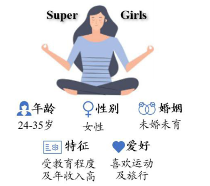
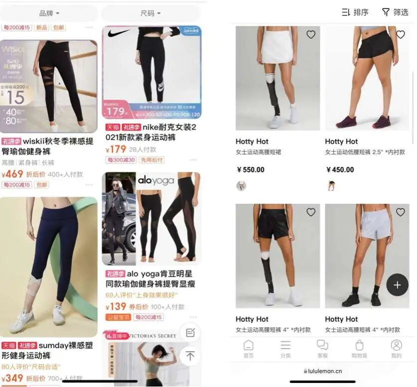
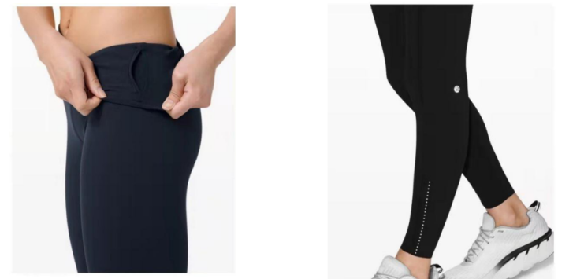
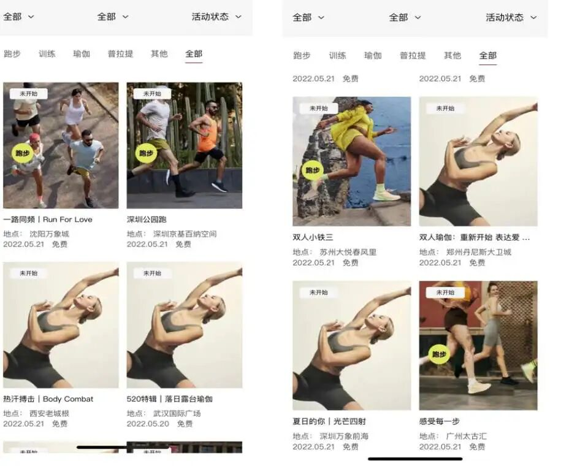

当行业还在比拼流量与性价比时，Lululemon证明了商业的本质始终是“看见人”—— 看见用户对舒适与美的追求，对社交与自我实现的渴望。
引言
1998年，当Lululemon在温哥华以一条解决女性瑜伽痛点的裤子开启征程时，或许并未想到会改写运动服饰的商业逻辑。这个避开耐克阿迪正面竞争的品牌，用精准的“Super girls”人群定位、兼具功能与时尚的产品设计，以及从瑜伽社群到全球热汗文化的渗透，完成了从小众圈层到流行符号的跨越。本文将从差异化定位与心智占领策略切入，解码这个市值超 500 亿美元品牌的成长密码。
品牌介绍
Lululemon（中文名露露乐檬）于1998年在温哥华成立，以售卖女性瑜伽服起家，经过20余年的发展，目前已成长为全球瑜伽市场龙头，业务逐步拓展至男性服饰、个人护理及运动鞋领域。其创始人Chip Wilson于90年代敏锐地察觉到了北美地区所兴起的瑜伽热潮，以及当时女性瑜伽服装所存在的市场空白，开始专注于打造为女性瑜伽而服务的服饰品牌，其品牌理念、产品设计和宣传都围绕“瑜伽生活”而开展。
随着千禧年后瑜伽在全球层面上的风靡，运动和休闲风相结合的Athleisure运动时尚同期兴起，Lululemon也开始注重运动服的时尚属性，将产品线扩展至网球、旅行以及办公等多元使用场景中。截止至2023年，该品牌业务遍布全球近20个国家，拥有超过570家门店，公司市值超500亿美元，位居全球运动鞋服行业前列。
对Lululemon的发展历程进行回顾，其在成立初期的差异化市场定位、中期对战略框架的完善，以及近期所使用的全渠道营销模式，都是品牌占领用户心智，进行差异化并逐步树立品牌壁垒的必经之路。下面，本文将从差异化和显著性两方面为切入点，分析lululemon在近二十年来快速发展的互联网环境中所进行的品牌塑造。
差异化：锁定细分市场
Super girls
在进入运动服饰领域后，Lululemon没有选择与Nike、Adidas两大巨头正面交锋，而是选择了当时市场细分中的新消费者：新兴的新中产高知独立女性群体，从定位之初就与其他运动品牌进行了有效区分。受教育程度的升级提升了这部分女性的收入水平和对自我提升的需求，女性瑜伽和运动热潮也在北美地区兴起，然而，当时的市场上却几乎没有针对这一群体的运动品牌，存在着巨大的市场鸿沟。
lululemon精准定位了这一市场空白，将其品牌的用户画像描述为年龄在24-34岁，未婚未育，受教育程度高，年收入8万美金以上，喜欢运动和旅行的女性，并称其为“Super girls”。对这一群体而言，较高的收入程度使得她们拥有一定经济实力，能够承担相对较高的服饰价格，而尚未婚育的人生状态则提升了她们可用于自身的可支配收入比例，细分市场的购买力强劲。

图1 Lululemon的用户画像
运动+时尚
围绕其目标受众的需求，Lululemon开始在社交网络上塑造其“提供更好的生活方式”的品牌形象。初期将品牌与瑜伽这一流行的女性运动风尚相绑定，宣称其产品能够提供更为卓越的瑜伽体验，抓住高客单价的核心用户群体，而随着女性运动的不断发展，Lululemon也逐步拓展至多个运动出行场景和相关品类，包括网球、徒步以及游泳等场景当中。Lululemon将重点放在产品理念的升级上，高调宣布与Roksanda和Robert Geller等服饰领域的高端设计师合作，通过提升产品的时尚性来扩展用户使用场景，让Lululemon不仅是可以出现在健身房的功能性服装，也是可以出现在街道、聚会以及办公中的具有时尚属性的服饰。
基于产品理念的革新，Lululemon在宣传上也紧跟互联网时代的浪潮变化，初期引领运动休闲这一时尚风潮，将品牌定义为精英女性的首选，而在女性主义蓬勃发展时期，品牌则开始采用多元化的模特并将其作为品牌的宣传卖点，通过保留模特自身的形态特征来强调品牌对于多元之美的追求，提出“让所有女性穿上lululemon都可以变得更好”的品牌理念，为其差异化提供了更为坚实的基础，即相较于普通运动品牌，lululemon能提供时尚，而相较于其他时尚品牌，lululemon能让用户更为舒适和自信。

图2 淘宝高销瑜伽品牌与Lululemon所选用的模特对比图
显著性：以产品占领用户心智
极致产品力
Lululemon的核心竞争力主要体现为其具备行业稀缺的“洞察消费者需求-转化为产品设计”的研发创新能力。运动员出身的Chip Wilson敏锐地察觉到了当时女性瑜伽裤所存在的剪裁与材质问题会使得使用者出现隐私部位的遮蔽问题（camel toe）、过高透明度导致走光等困扰。
然而，由于专门女性运动品牌的缺乏，这一问题虽然普遍存在，但消费者的抱怨和心声并未被当时的运动品牌所采纳。Lululemon针对这一痛点，自主研发了高弹力、高透气性的Luon、Nulu、Everlux等一系列核心面料4，并通过裆部无缝剪裁及菱形内衬设计，解决了困扰几乎所有女性瑜伽爱好者的问题，并为女性用户提供了不同运动场景的产品设计，奠定了Lululemon在女性运动市场的基础。
除了对用户痛点的深入理解，lululemon的极致产品力也体现在对瑜伽裤的细节设计上，如增设隐形口袋方便用户携带手机等贴身物品，设计拇指洞、外缝线以提升穿着体验，以及在裤脚增设反光条以保障用户夜间出行安全等让用户惊喜的“Aha moments”。

图3 Lululemon的隐形口袋和反光条设计
品牌作为生活方式的载体
基于卓越的产品设计，Lululemon也开始拓展品牌的核心竞争力，将产品延伸至商务、通勤等日常场景，通过倡导“热汗生活”这一品牌理念，将产品与热情、健康的生活方式理念所绑定，并塑造了追求这种生活方式的用户形象——他们充满热情、专注、勇敢，并敢于挑战自我，从而向其用户传递了积极的心理暗示：只要购买并使用Lululemon，就能拥有Lululemon所倡导的美好生活方式，并实现理想的生活状态。
对于消费者而言，他们购买的不仅仅是运动服，而是一种生活方式。一条瑜伽服可以是新的一年的决心，也可以是一个与外界相处的新方式。通过塑造积极的情感价值，Lululemon给予了用户以极强的身份认同，让用户相信Lululemon代表了一种自我追求和生活态度的认同，而这也与Lululemon此前的市场定位“Super girls”相一致，高教育水平和高收入的女性消费者希望向外界展示自身对于高生活品质和自律生活方式的追求，因此Lululemon的高价格策略也在此成为了优势，即用户可以通过价格展示自身的经济水平，以及对于健康的追求,通过品牌价值来获得身份认同。
网络外部性：品味象征的品牌力
门店+私域+种草
而在选择目标市场并提供相应的产品后，如何让消费者喜爱产品，并对品牌产生忠诚，才是Lululemon所关注的重点。在成立初期，针对瑜伽爱好者这一小众运动群体，Lululemon并未效仿传统运动品牌，在线上线下投放大量视频及广告牌进行宣传，而是针对瑜伽社群的高度垂直性，选择在瑜伽社区中实施“品牌大使计划”：在进驻新城市前，Lululemon会先与当地瑜伽教练或健身场馆取得联系，以免费提供训练服饰的方式，换取瑜伽教练在课堂中身着其品牌服饰。这使得瑜伽课堂中的所有学员都能直观地感受到瑜伽服的裁剪、面料等特性，增强品牌在特定目标受众中的曝光度。
同时，瑜伽教练这一身份对于普通瑜伽爱好者而言具有较高的权威性和专业性，选择这一群体作为社区传播的中心，能够将其所具有的权威性和专业性附着于品牌之上，通过意义迁移提升消费者对品牌的感知。因此，这种KOC种草模式对于品牌在特定人群中的快速扩张起到了良好的作用。
在线下门店，lululemon也创新使用KOS（职人销售），招募瑜伽爱好者或健身教练作为门店销售人员，并赋予其“产品教育家”的称号，通过其专业知识为消费者提供更为精准的服饰建议，专业人士的知识通过相似性原理强化了消费者对Lululemon与瑜伽所存在链接的认知，从而加强了消费者对品牌的信赖。同时，店员会向消费者介绍门店所组织的线下瑜伽活动与课程，使得消费者通过Lululemon加深了对瑜伽社群的参与度，以及与其他爱好者的联系，Lululemon成为了维系这一社群的灵魂所在。

图4 瑜伽社区活动
全渠道的顾客体验
对于Lululemon而言，成为生活方式品牌意味着强大的品牌-顾客间的情感联系。围绕着线下门店，Lululemon设计出一套完善的全渠道体验模式，在围绕线下门店搭建社群后，围绕着“热汗生活”这个品牌标语，把共同区域、共同兴趣的粉丝组织在一起，当社群分享的传达吸引到用户时，社群运营会解答用户对于商品的问题并进一步引导用户至门店消费，通过线下社群活动与用户建立情感链接，从而让用户持续地、自愿地分享给朋友。
社区的建立一方面可以将产品与免费体验课紧密结合，让消费者在长期的瑜伽训练中了解Lululemon、改变生活方式，并在轻松愉悦的训练氛围中直接进行购买，通过品牌文化的具象化展示提高消费者的品牌黏性，另一方面可以深入触达潜在消费者，洞察其消费习惯和生活习惯，并借此收集反馈以不断改进产品。通过这些，消费者会感知到他们不仅得到了Lululemon的支持，也得到了社群中其他成员的支持，在现实生活中相互帮助，从而继续追求健康生活方式，最大化提升了社群的价值。
而当Lululemon拥有了较为稳定的线下社群后，线上打造品牌形象以获得破圈和引流效果变成为其在互联网时代的必经之路。在各类社交媒体上，Lululemon讲述的不是产品内容，而是一个又一个鲜活的生活故事，从而建立起健康、追求品质的品牌形象，同时也与各大运动博主进行合作推广，通过博主讲述穿着Lululemon的故事，将Lululemon与中产、精致等概念进行强绑定，在社交媒体上的观看者心智中植入“Lululemon=更好的生活”这一定义，使得Lululemon不仅是服饰，而是成为消费者在社交媒体当中彰显自身品味与经济水平的象征，吸引众多消费者模仿和追求，通过攀比效应，让Lululemon成功出圈，成为互联网时代下新的中产三件套之一，也奠定了Lululemon在高端运动服饰领域的地位。
结语
Lululemon 的故事，本质是一场对 “人” 的深度理解：瞄准新中产女性未被满足的需求，用产品细节打动用户，以社群运营黏住用户，让运动服饰超越功能性，成为身份认同的载体。当行业还在比拼流量与性价比时，它证明了商业的本质始终是“看见人”—— 看见用户对舒适与美的追求，对社交与自我实现的渴望。从温哥华的瑜伽垫到全球都市的街头，Lululemon的崛起不仅是品牌的胜利，更是一场关于 “精准洞察 + 情感连接” 的商业启示。
参考文献
[^1]2023 Annual Report[EB/OL].Lululemon,2024
[^2]Lululemon的崛起之路[EB/OL].国泰君安,2022.
[^3]品牌猿.折叠人群——Lululemon新社群破局之道[B].雪球,2023.https://www.woshipm.com/marketing/5191469.html
[^4]白婷丹.Lululemon：“巫师”与“刺猬”的组合游戏[B].增长黑盒研究组,2022. https://www.huxiu.com/article/490332.html
[^5]钱多乐.Lululemon品牌战略：差异化打造忠实客户群体[B].雪球,2023.https://www.woshipm.com/share/6021475.html
[^6]Lululemon在中国[EB/OL].华丽智库,2023.https://luxe.co/post/296066